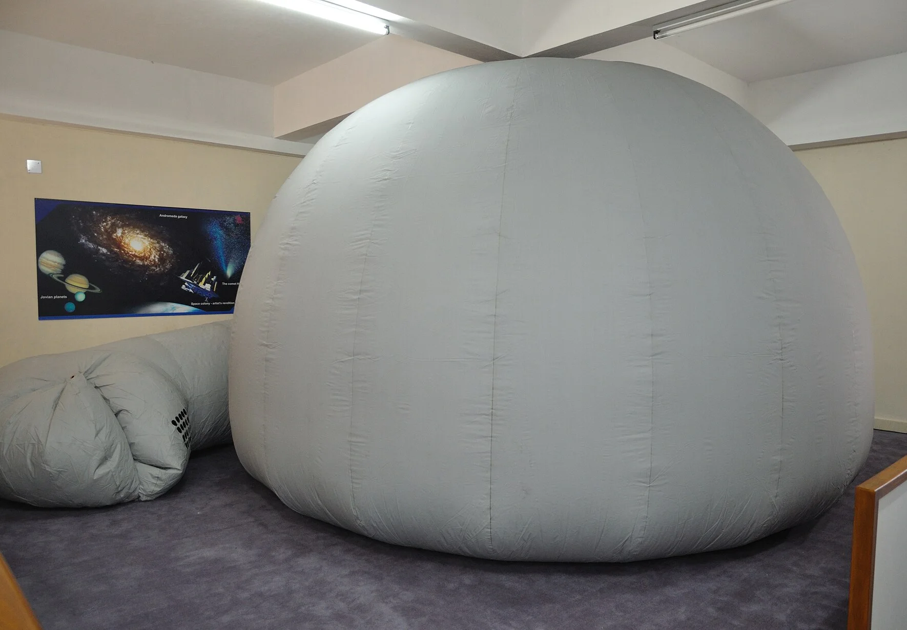
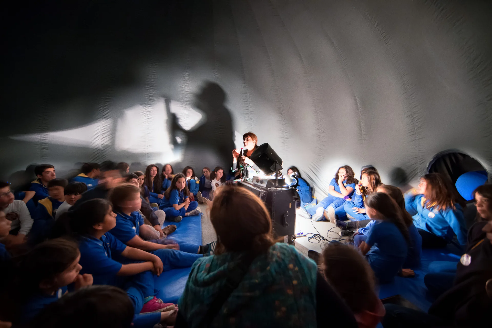

İş kollarımız
Çadır Planetaryum
Okul ve kurumlarda taşınabilir planetaryum gösterisi.


Teknik ayrıntılar teklif aşamasında netleştirilir.
Nasıl çalışır
Üç adımda gösteri
01
Kurulum
Şişirilebilir kubbe okulun salonuna kurulur.
02
Gösteri
Öğrenciler kubbeye girer; sunucu eşliğinde gökyüzü gösterimi yapılır.
03
Toplama
Gösteri bitince kubbe toplanır; salon eski haline döner.
Gösteri içeriği
Neler izlenir
- Gece gökyüzü, takımyıldızlar ve mevsim değişimi
- Güneş sistemi ve gezegenler
- Mars ve uzay keşfi
- Yaş grubuna göre seçilebilen program
Kimler için
Kimlere hizmet veriyoruz
- Okullar ve kurslar
- Belediyeler ve kültür merkezleri
- Bilim şenlikleri ve etkinlikler
- Özel kurumlar
Teknik bilgiler
Kubbe ve gereksinimler
| Kubbe çapı | Salonun boyutuna ve grubun büyüklüğüne göre seçilir |
| Kişi kapasitesi | Kubbe boyutuna bağlıdır; büyük gruplar ardışık seanslara bölünür |
| Kurulum süresi | Kurulum ve toplama, gösteri günü içinde tamamlanır |
| Gereken alan ve tavan yüksekliği | Keşifte salon ölçüsüne göre belirlenir; spor salonu veya konferans salonu uygundur |
| Elektrik | Standart priz yeterlidir; ayrıntı keşifte netleştirilir |
| Gösteri süresi | Yaş grubuna göre ayarlanır; bir okul gününde birden çok seans yapılabilir |
Teklif